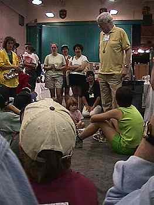
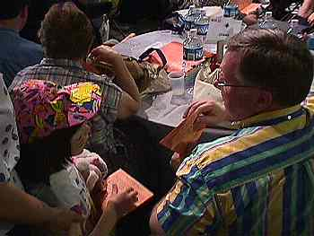
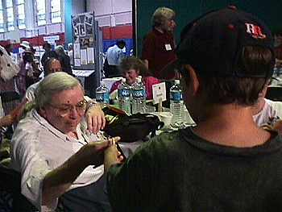
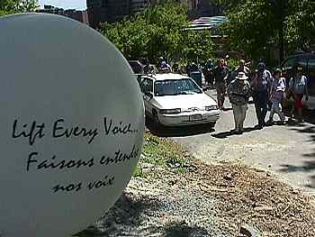
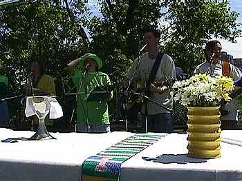
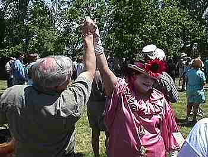
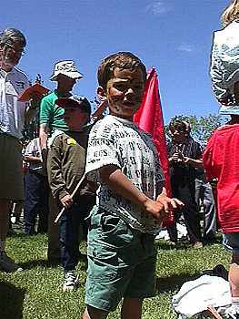
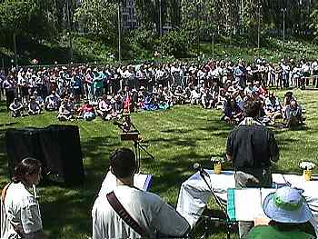
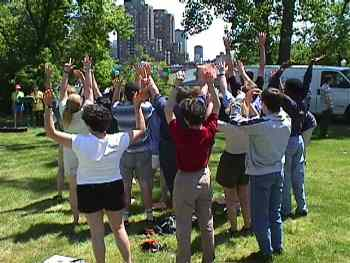

Note: This page will take about two minutes to load fully.
Children's
Eucharist Photo Album
Saturday Afternoon

Archbishop Michael Peers greeted the children
in the display area near Plenary hall (which
is behind the large green wall in the background).
He spent a few moments explaining General
Synod to the young people, then led them into
the Plenary floor...

... where they began handing out copies of the service for the
outdoor Eucharist to follow...

...and crayons.

All 400+ Synod attendees then walked up the hill to a balloon-
covered playing field for the outdoor service...

...and were greeted by a lively band, leading the worshippers
in contemporary praise with saxaphone, flute, a bass guitar,
and a drum set.




Photos by Tod Maffin